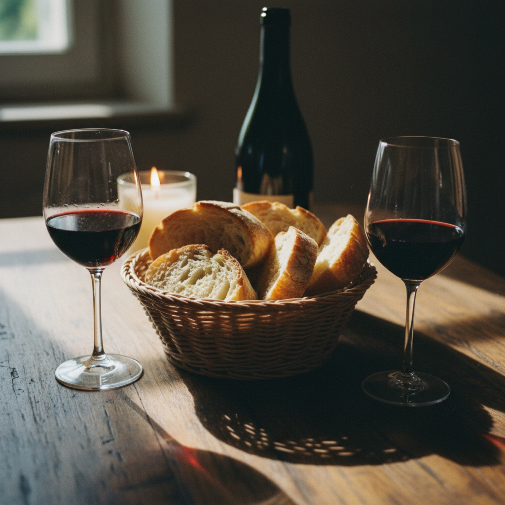

Il menu
Scritto a mano ogni giorno: qui trovi i piatti che torniamo a fare più spesso. Le verdure e i primi cambiano con la stagione, quindi in sala potresti trovare anche qualche fuori menu sulla lavagna.
Antipasti & primi
Secondi & contorni
Il menu degustazione
“La lavagna di oggi”
42€Ci pensiamo noi: un antipasto, due assaggi di primo, un secondo e il dolce, scelti tra quello che la stagione e il mercato ci hanno dato la mattina. È il modo migliore per capire chi siamo.
- Abbinamento vini del territorio: +18€
- Versione vegetariana su richiesta, stesso prezzo
- Per tutto il tavolo, da prenotare al momento della conferma
Dolci & cantina
Allergeni: i nostri piatti sono preparati in una cucina dove si lavorano glutine, latticini, uova, frutta a guscio, sedano e pesce. Hai un'allergia o un'intolleranza? Dillo in sala prima di ordinare: adattiamo volentieri quello che possiamo. I prodotti surgelati all'origine sono indicati a voce.

Si mangia bene quando
c'è tempo per stare
Un bicchiere di rosso, il pane caldo e nessuna fretta di liberare il tavolo. Da noi il pranzo dura quanto deve.
Hai scelto cosa mangiare?
Allora manca solo il tavolo. Prenota online in un minuto, oppure chiamaci: la sala è piccola e i posti del fine settimana volano.